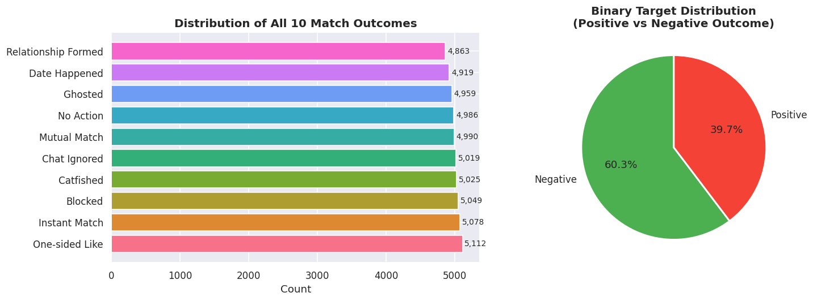
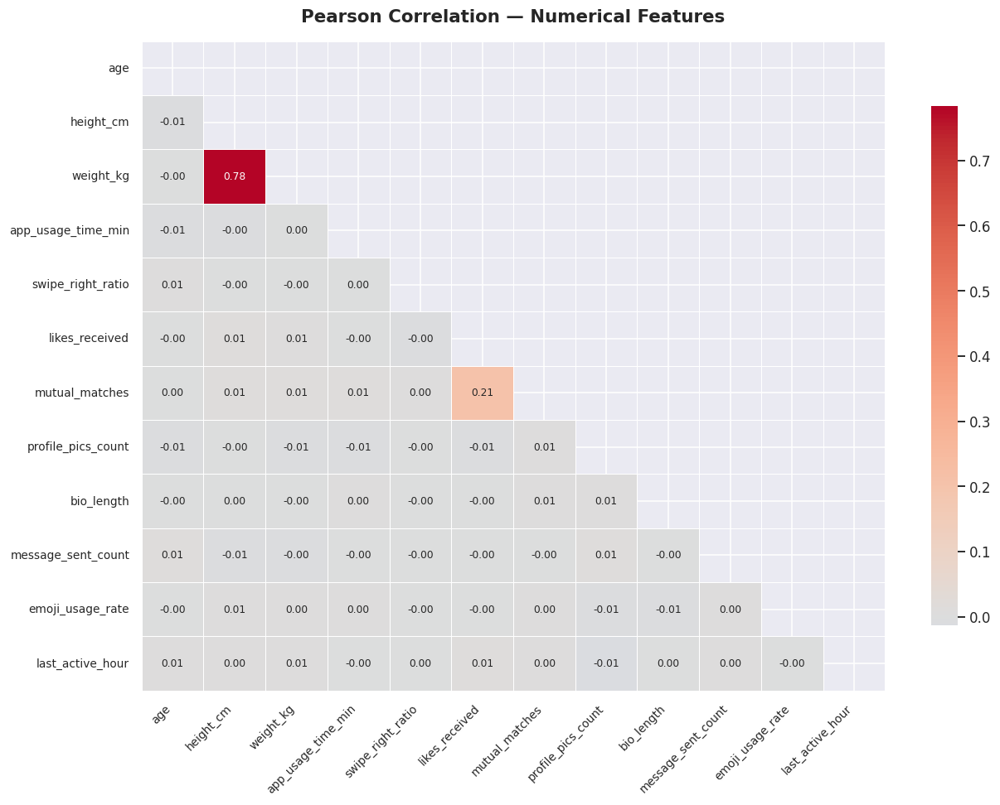
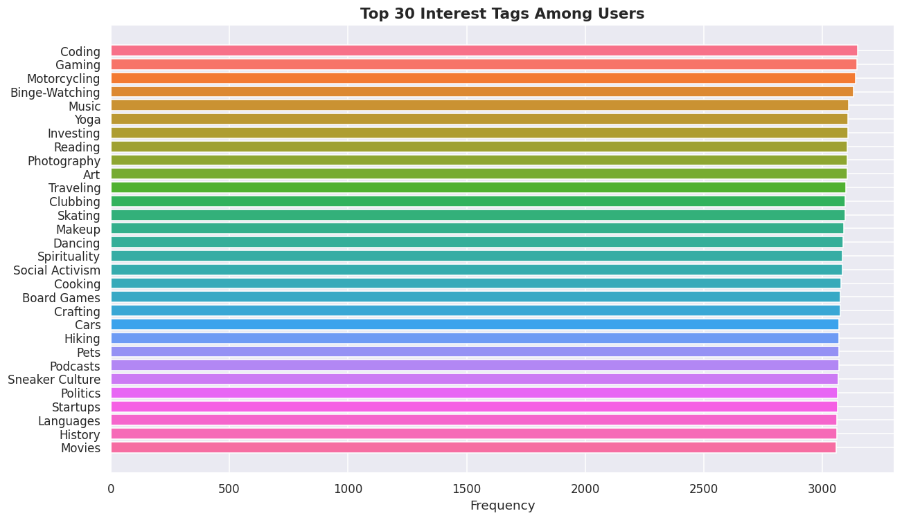
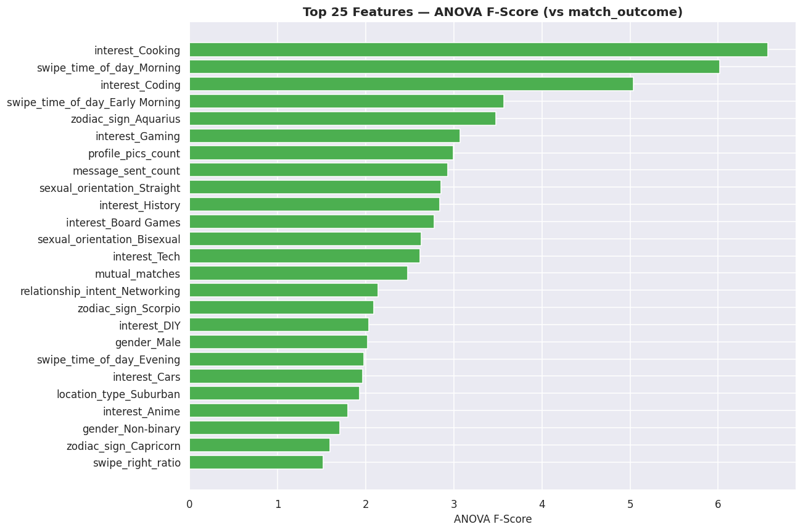
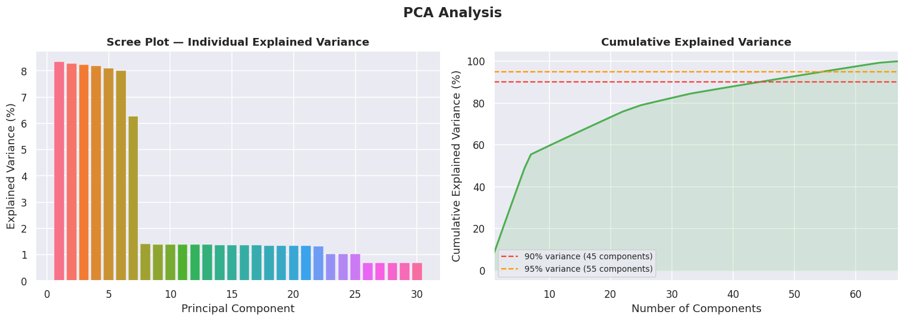
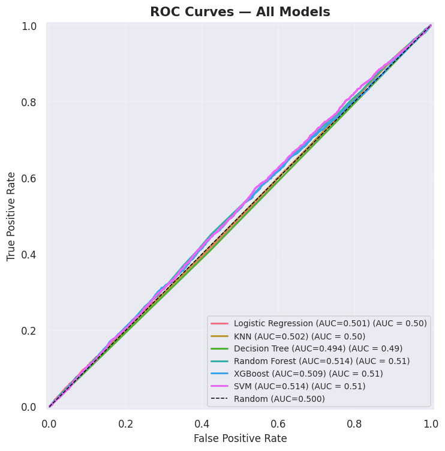
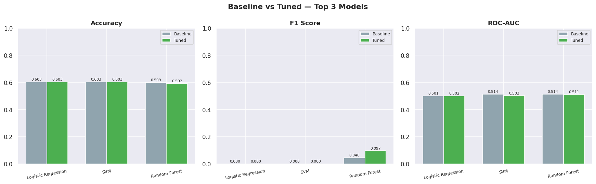
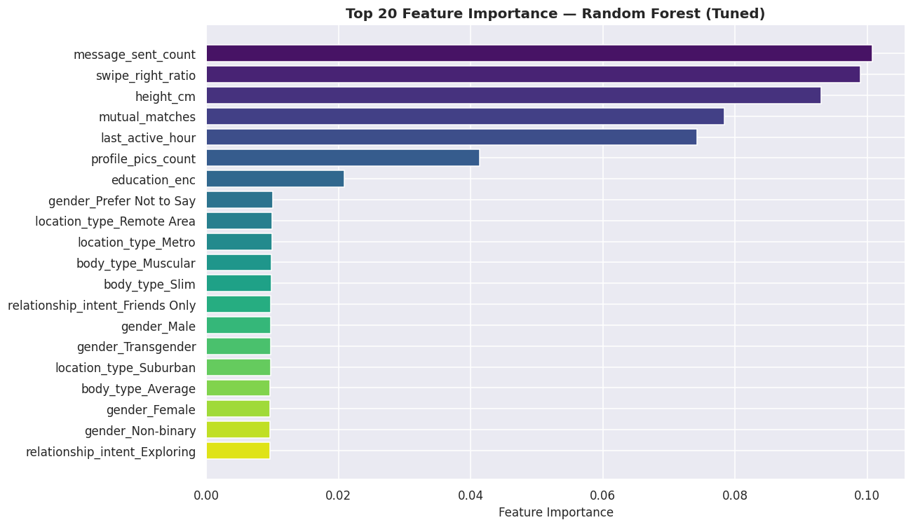

Universiti Malaya | FCSIT Group Assignment
Can we predict human connection using data?





Trained on an 80/20 stratified split. 6 base models evaluated:

RandomizedSearchCV across the Top 3 Models.
class_weight='balanced'
The models achieved a consistent ROC-AUC of ~0.50.
This scientifically proves that the features in this synthetic dataset do not contain hidden predictive signals for a "Meaningful Connection".